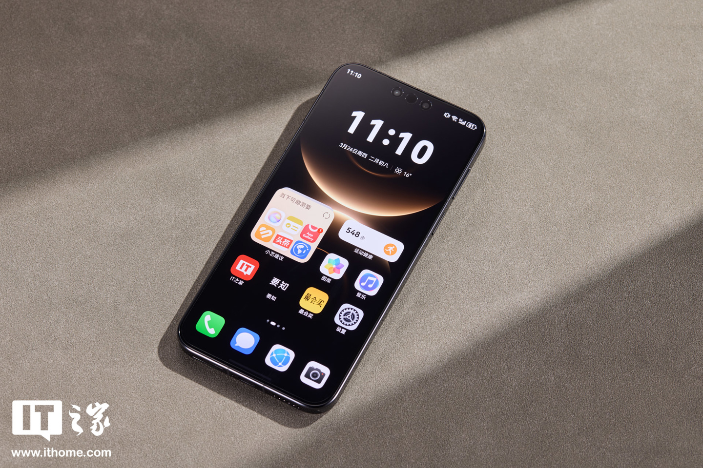
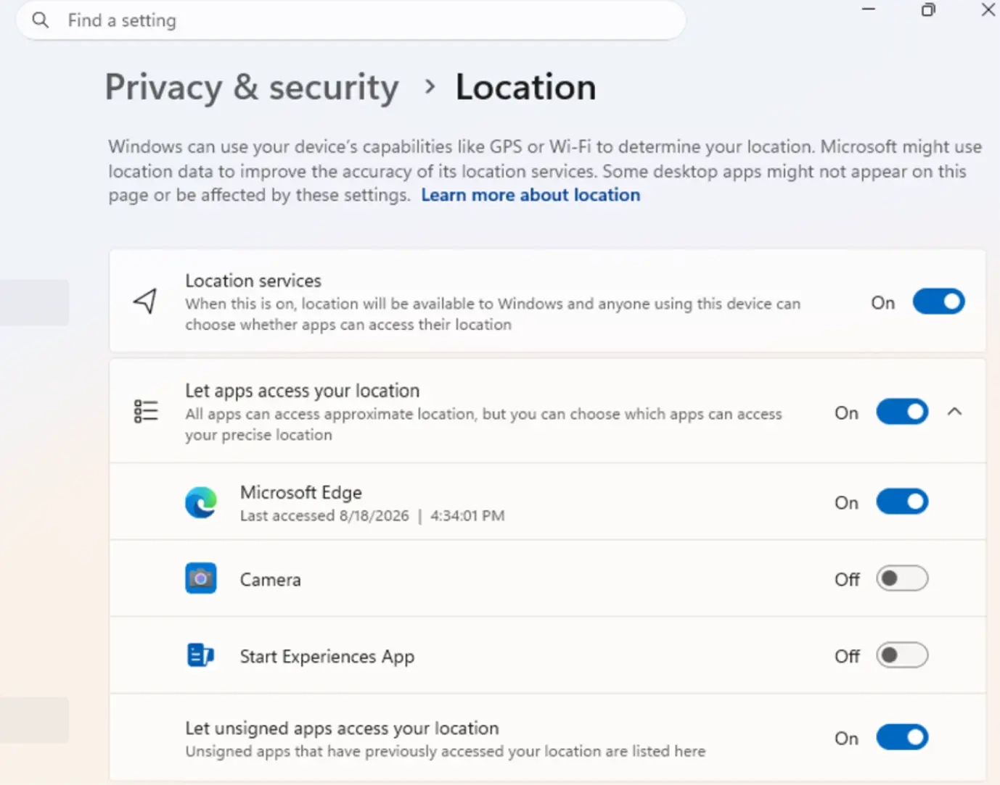
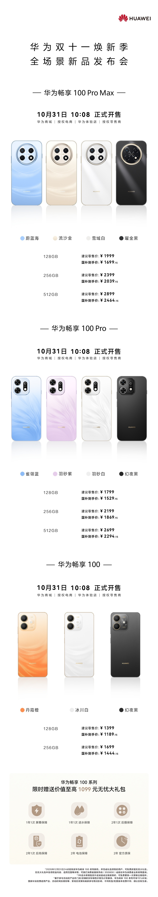
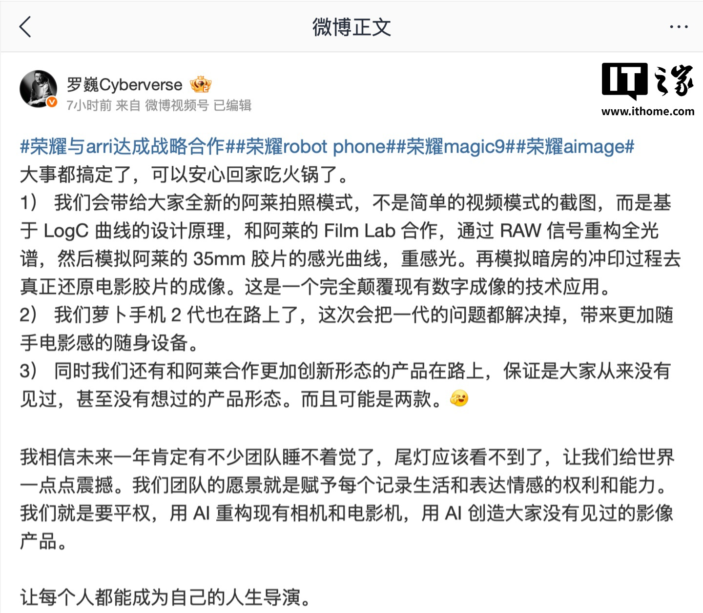
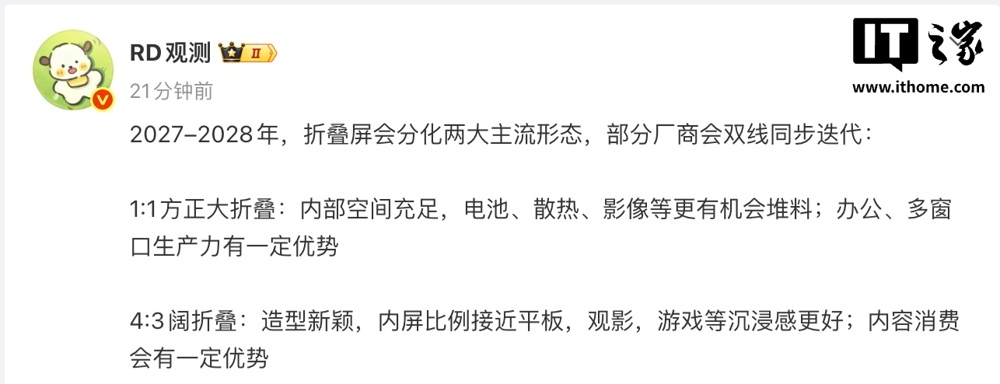
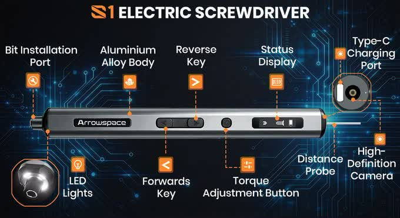

THE TECH EDIT
기술의 변화, 매일 한눈에.
카메라 · 스마트폰 · AI, 해외 테크 소식을 모아 전합니다.
최근 발행2026-11-02
새로 들어온 소식
LATEST STORIES
최신 뉴스
전체 4,067개 기사
OnePlus Turbo 6Vs 스마트폰 출시: 4세대 Qualcomm 스냅드래곤 7s 프로세서, 12GB + 256GB 모델 3699위안

일본 최초 DJI, 하셀블라드 콘셉트 플래그십 스토어 오픈, 융합 경험 주력
Huawei 신형 스마트폰 카메라 사전 전망: 200MP 1/1.3인치 초 대형 센서 메인 카메라 + 200MP 1/1.4인치 대형 센서 페리스코프 망원 카메라, 내년 출시 예정

Huawei HarmonyOS 7 시스템 '스타 플래시 이어폰' 기능 출시, 스마트폰 기본 음악 앱 + 재생 제어 센터에서 체험 가능
Honor Magic9 시리즈 스마트폰 '전화 연결/끊김 진동' 기능 복귀, '115SP8' 버전 업데이트로 사용 가능
Apple iPhone 18 Pro 시리즈 판매량 600만 대 돌파
"신장 허무 풍경구 야생 원숭이 떼가 산에서 내려와 스마트폰을 빼앗았다"는 소문은 AI 생성이며, 현지에는 원숭이 떼가 서식하지 않는다고 당국이 밝혔다.

Xiaomi, 150도 듀얼 카메라와 6개월 배터리 수명을 갖춘 새로운 스마트 초인종 출시
Xiaomi Redmi K100 스마트폰 첫 판매: 스냅드래곤 8 엘리트, 10000mAh 배터리, 한정 특가 2999위안부터

더 이상 "일률적"이지 않다: Microsoft Windows 11 미리 보기 버전, 앱별 카메라, 마이크, 위치 권한 개별 관리 가능

삼성, 내년에 언더 디스플레이 카메라 다시 선보인다

Samsung, Apple 첫 폴더블 아이폰 Duo 조롱: 폴더블 디스플레이는 우리가 경험이 풍부하다

RedMagic 12 Pro+ vs OnePlus 16: 전용 게이밍 팬 vs 200MP 카메라

OnePlus, 향후 새로운 소형 스마트폰 출시하지 않을 수도
iPhone 17, 징둥에서 4,990위안, 11.11 자영 PLUS 보조금 적용 후 5천 위안 돌파
Huawei Pura 90 Plus 스마트폰 출시: 1인치 메인 카메라, Kirin 9025 최초 탑재, 5199위안부터 할인 판매

Huawei 창샹 100 시리즈 스마트폰 첫 판매: 기린 8000S/8020A/8020 프로세서, 1,399위안부터

Honor 로웨이: 완전히 새로운 ARRI 촬영 모드를 선보일 것이며, 단순한 비디오 모드 스크린샷이 아니다

폴더블 디스플레이 스마트폰, 내년부터 대형 폴더블과 와이드 폴더블 두 가지 주류 형태로 분화될 전망, 일부 제조사는 두 라인 동시 개발

세계 최초 AI 전동 드라이버: 홍콩 Arrowmax, 카메라로 나사 유형 식별하는 S1 출시
네티즌이 공유한 Apple iPhone Duo 팁: 검지 두 번째 마디 지문을 등록하면 스마트폰을 들자마자 자연스럽게 잠금 해제
검색 결과가 없습니다
다른 검색어를 입력하거나 필터를 초기화해 보세요.